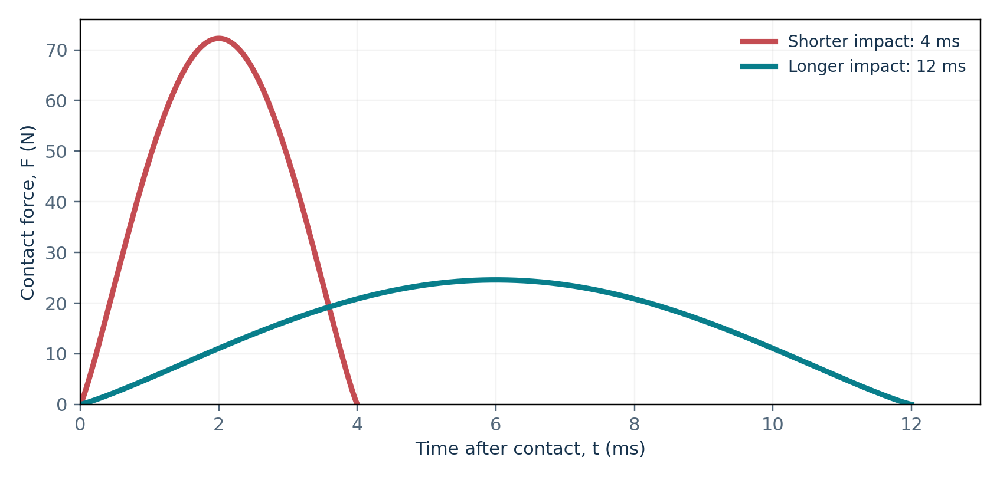

The eight CED statements are covered individually below. Answers initially remain hidden.
Open two-page summary (PDF)Part 1 · CED knowledge coach
Work out each response using your existing physics knowledge. Use Hint only if needed, then Reveal answer to check your reasoning.
Explore the force–time relationship
Change the stopping time
Use the interactive model to preserve the ball’s momentum change while varying the duration of contact.
Compare contact impulse with net impulse, and watch the force curve change smoothly.
Launch the force–time simulation
Part 2 · Multiple-choice practice
Choose an option before checking. You can change your answer and try again; each explanation is shown only after a choice is made.
Part 3 · Your free-response questions
Questions 1–3 are adapted from your original worksheet. Questions 4–5 extend momentum changes to two perpendicular directions. Work on paper before revealing solutions.
Lesson resources

Worked answer PDFs are provided separately in the downloadable teacher pack and are not linked from this student lesson.